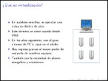
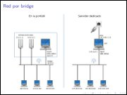
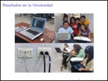
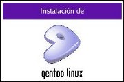
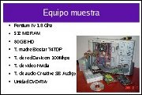
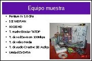

Movimiento Libre
Colección de ideas.
Gentoo
Crear certificados autofirmados para Apache 2
2014-02-22 17:30 - guivaloz
Involucrarse en el cifrado de la información que viaja a través de internet es como adentrarse a un mundo bizarro que es más complicado que el nuestro. Pero cada día se vuelve más importante e indispensable para cada servicio web que fabriquemos.
Podemos listar muchas razones para justificar que todos los sistemas y sitios web deberían cifrar sus datos al viajar del servidor al cliente y viceversa. Pero sólo basta una: el fin de dificultar las acciones de espionaje masivo al que todos estamos expuestos.
En este apunte escribo los pasos para crear certificados autofirmados para que el servidor web Apache opere cifrando las comunicaciones con SSL. Dicho de otra forma, es usar el HTTPS en lugar del HTTP.
Virtualización con QEmu
2009-11-28 23:00 - guivaloz
  
Con motivo del Congreso Iberoamericano FOSS 2009 que organiza la Universidad Autónoma de Zacatecas he elaborado la conferencia Virtualización con QEmu.
En este material se ilustra de forma sencilla cómo se usa el virtualizador QEmu y cómo lo he usado en la impartición de clases de GNU/Linux en la Universidad Tecnológica de Torreón.
Descargar
Gentoo Linux... ¡10 años compilando!
2009-10-06 22:00 - guivaloz
El 5 de octubre de 2009 se celebró el décimo aniversario de la distribución Gentoo Linux con la liberación de un LiveDVD conmemorativo. Hace diez años, el proyecto Enoch fue renombrado como Gentoo y el nombre de dominio gentoo.org fue registrado.

Instalación de Gentoo Linux
2006-10-01 15:00 - guivaloz
  

Gentoo Linux es una distribución de GNU/Linux completamente gratuita, versátil y rápida orientada hacia desarrolladores y profesionales de la red.
En esta presentación se muestran los pasos de la instalación del Gentoo Linux en un equipo muestra.